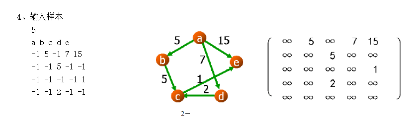

1 package main.java;
2
3 import main.java.utils.GraphUtil;
4
5 import java.util.ArrayDeque;
6 import java.util.List;
7 import java.util.Queue;
8
9
10 /**
11 * @Tme 2019/9/12 10:40
12 * @Author chenhaisheng
13 * @Email:ecjutsbs@foxmail.com
14 */
15 public class DijkstraTest {
16
17 //邻接矩阵的表示
18 public final static double[][] GRAPH_DISTANCE = GraphUtil.getDijkstraGraph();
19
20 //起点到某节点的临时最短距离
21 public static double distance[] = new double[GRAPH_DISTANCE.length];
22
23 //某节点的前驱节点
24 public static int pre[] = new int[GRAPH_DISTANCE.length];
25
26 static int originIndex = 0, toIndex = 4;
27
28
29 public static void main(String[] args) {
30
31 init();
32 findDijkstraShortestPath();
33 }
34
35 /*
36 **初始化distance[] pre[]
37 */
38 public static void init() {
39
40 for (int i = 0; i < distance.length; i++) {
41 if (i == originIndex) {
42 distance[i] = 0.0;
43 continue;
44 }
45 distance[i] = Double.MAX_VALUE;
46 }
47
48 for (int i = 0; i < pre.length; i++) {
49 pre[i] = -1;
50 }
51 }
52
53 public static void findDijkstraShortestPath() {
54
55 //queue用于保存尚待搜索的节点
56 Queue<Integer> queue = new ArrayDeque<>();
57
58 //起始，将起始节点添加到queue
59 queue.add(originIndex);
60
61 while (queue.size() != 0) {
62
63 Integer currentIndex = queue.poll();
64
65 //获取当前节点的out-edges
66 List<Integer> neighbours = getNeighbours(currentIndex);
67
68 for (int i = 0; i < neighbours.size(); i++) {
69
70 //获取邻居节点的索引值
71 int neighbourIndex = neighbours.get(i);
72
73 //若起点经当前节点到邻居节点的距离 比直接到邻居节点的距离还小
74 if (distance[currentIndex] + getDistance(currentIndex, neighbourIndex) < distance[neighbourIndex]) {
75
76 //更新起点到邻居节点的距离
77 distance[neighbourIndex] = distance[currentIndex] + getDistance(currentIndex, neighbourIndex);
78
79 //设置下一个节点的前驱节点为当前节点
80 pre[neighbourIndex] = currentIndex;
81
82 //由于distance[neighbourIndex]已经改变，因此需要重新搜索neighbourIndex
83 queue.add(neighbourIndex);
84 }
85 }
86 }
87
88 //输出从originIndex到toIndex的路径
89 printPath(pre, originIndex, toIndex);
90 }
91
92
93 public static void printPath(int pre[], int from, int to) {
94
95 //栈
96 Deque<Integer> path = new ArrayDeque<>();
97
98 path.push(to);
99
100 int preIndex = pre[to];
101 while (preIndex != from) {
102 path.push(preIndex);
103 preIndex = pre[preIndex];
104 }
105
106 path.push(from);
107
108 while (!path.isEmpty()) {
109 System.out.print(path.poll() + (path.size() > 0 ? "------>" : " "));
110 }
111 System.out.println(" ");
112 }
113
114
115 //获取当前节点所有的out-edges
116 public static List getNeighbours(int index) {
117
118 List<Integer> res = new ArrayList();
119
120 //距离不为Double.MAX_VALUE,代表与当前节点连通
121 for (int i = 0; i < GRAPH_DISTANCE[index].length; i++) {
122 if (GRAPH_DISTANCE[index][i] != Double.MAX_VALUE)
123 res.add(i);
124 }
125 return res;
126 }
127
128 public static double getDistance(int from, int to) {
129 return GRAPH_DISTANCE[from][to];
130 }
131 }
1 package main.java.utils;
2
3 /**
4 * @Tme ${DATA} 19:10
5 * @Author chenhaisheng
6 * @Email:ecjutsbs@foxmail.com
7 */
8 public class GraphUtil<T> {
9
10 public static double[][] getDijkstraGraph(){
11 double max=Double.MAX_VALUE;
12 double[][] graph={
13 {max,5,max,7,15},
14 {max,max,5,max,max},
15 {max,max,max,max,1},
16 {max,max,2,max,max},
17 {max,max,max,max,max}
18 };
19 return graph;
20 }
21 }
对应的图：

图的结构Ref：https://wenku.baidu.com/view/9fdeaa3c2b160b4e767fcff7.html
小结：
最重要的是记住：在搜索过程中，若节点i对应的distance[i]发生改变，那么对其任意一个邻居节点j，对应的distance[j]都要重新计算，继而引发连锁反应。
对某一个节点k，distance[k]通常会发生会多次改变。